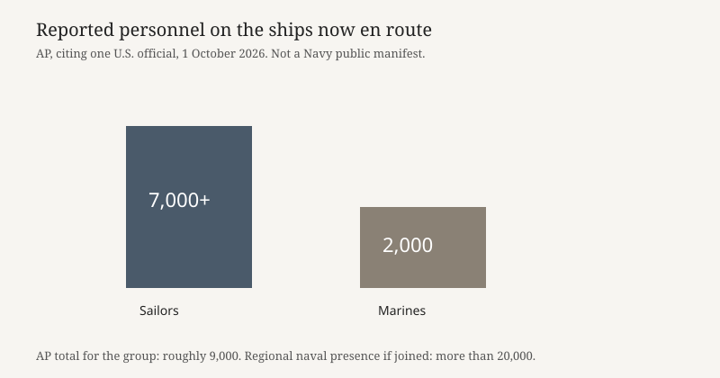

Washington · armed forces · 1 October 2026
A U.S. official said about 9,000 troops and a third aircraft carrier are heading to the Middle East
_arrives_at_Pearl_Harbor.jpg)
What is agreed across desks
On Thursday, 1 October 2026, the Associated Press reported that the U.S. military was dispatching roughly 9,000 troops aboard a group of ships toward the Middle East. The figure came from a U.S. official who spoke on condition of anonymity to discuss operations. The Globe and Mail carried the same official account. The group was described as more than 7,000 sailors and 2,000 Marines. Named ships in that account: the USS Theodore Roosevelt carrier strike group, recently deployed with the cruiser USS Chosin, and the USS Makin Island amphibious readiness group, including the amphibious ships USS John P. Murtha and USS Anchorage.
The same official said three carriers could be in the region as early as the end of October. Already there, AP reported, were the carriers USS George H.W. Bush and USS George Washington, plus the USS Boxer amphibious readiness group. Adding the new group would bring the naval presence to more than 20,000 sailors and Marines and hundreds of aircraft. AP noted that the Navy had three carrier strike groups in the Middle East in April, the first time since 2003, and that George Washington is normally a Pacific ship moved to relieve USS Abraham Lincoln after a deployment of more than 260 days. Those presence facts are the spine of the story. They are one official’s account, repeated by two newsrooms, not a fleet schedule posted by the Navy.
What is only a quote
President Trump said Iran would be hit “very hard” if a link were confirmed between Iran and a copilot who tried to crash an Israel-bound flight. “Oh, they’ll be hit very hard, don’t worry,” he said, in the AP account. Israeli Prime Minister Benjamin Netanyahu said an initial investigation found religious radicalization of the copilot; an Israeli intelligence official confirmed that remark, according to a Just Security digest of the day. “Likely involved,” as Trump put it, is his inference. It is not a published forensic finding in the sources used here. A deployment ordered or described on Thursday is not itself evidence that the copilot acted for Tehran.
Separately, Reuters was cited by Just Security for a report that senior Iranian commanders are reviewing plans to expand potential targets if the United States resumes large-scale attacks. That item rests on sources. It is a claim about planning, not an intercepted order reproduced in public. The State Department’s waiver of human-rights conditions on more than 300 million dollars of military aid to Egypt, described in the same digest from a 21 September letter, is a neighboring policy fact, not a reason stated for the carrier movement.
Mechanism
A carrier strike group is the carrier plus escorts. An amphibious readiness group carries Marines and the ships that land them. Moving both at once raises the number of people and aircraft faster than moving a carrier alone, which is why the 9,000 figure is sailors plus Marines, not pilots only. Transit time from a U.S. coast or from a Pacific handover to the Middle East is weeks, which is why “end of October” is a window, not an arrival notice. Three carriers in one region is unusual because each group is also a maintenance and crew-rest problem; the Lincoln’s 260 days is the illustration AP used. Presence is not a strike order. Strikes require a separate decision, target lists, and rules of engagement. Thursday’s story is the movement.
Anonymous official sourcing is a limit, not a decoration. The reader cannot see the order. Two outlets matching the ship names and the 7,000-plus-2,000 split is corroboration of what the official said, not independent satellite confirmation published in these articles. Oil prices were described as elevated in a Reuters market piece the same night, with the buildup named as one reason among others, including a Chinese halt to oil-product exports. A price is not proof of a deployment, and a deployment is not proof of a shortage.
What the story is not
It is not an announcement that strikes have resumed. It is not a finding that Iran directed the cockpit incident. It is not a Navy press release with a public sailing date; the sailing date in these pieces is the official’s estimate. It is not a picture of Theodore Roosevelt on this transit — the Commons still is the June arrival in Hawaii for an exercise. And it is not a claim that 20,000 people are already on station; that number is what the presence would become if the new group joins the ships already named.

Source articles and scores
| Outlet | Headline | T | N | C |
|---|---|---|---|---|
| Associated Press | Third aircraft carrier and thousands of troops head to Mideast as Trump weighs new Iran strikes | 94 | +4 | 82 |
| The Globe and Mail | U.S. moves 9,000 troops aboard ships to Middle East as Trump warns of possible new strikes on Iran | 90 | 0 | 80 |
| Just Security | Early Edition: October 2, 2026 | 82 | 0 | 70 |